Linux文本处理三剑客
一、grep：文本过滤工具
二、sed：字符流编辑器
三、awk：文本分析工具
一、grep：文本过滤工具
1、grep -v ‘123’ test3 #过滤不包含123的行
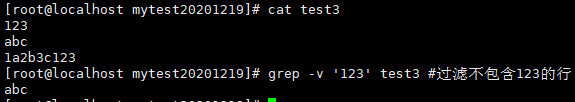
2、grep -n ‘123’ test3 #过滤包含123的行并输出行号
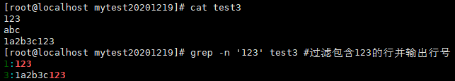
3、grep -i ‘AbC’ test3 #过滤含abc的行并不区分大小写
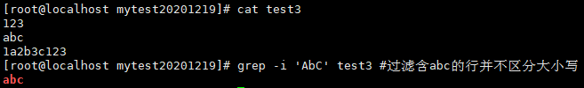
4、grep -Ei ‘abc|123’ test3 #同事过滤两个不同的字符串并为过滤的内容颜色显示，并不显示大小写
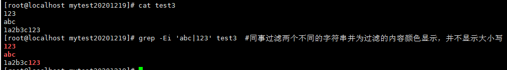
5、grep -c 123 test3 #匹配的字符串的数量
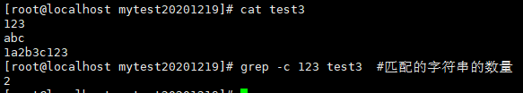
6、grep -o -n 123 test3 #只输出匹配的内容
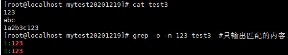
7、grep -w 123 test3 #全词匹配123
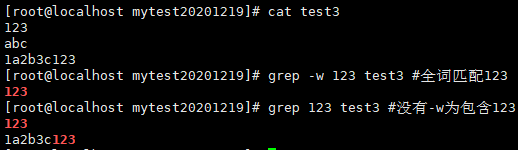
8、grep -Ev ‘^$|#’ test3 #去除文本中的^$空行 以及 #注释
’ fill=’%23FFFFFF’%3E%3Crect x=’249’ y=’126’ width=’1’ height=’1’%3E%3C/rect%3E%3C/g%3E%3C/g%3E%3C/svg%3E)
二、sed：字符流编辑器
预置测试文本：
’ fill=’%23FFFFFF’%3E%3Crect x=’249’ y=’126’ width=’1’ height=’1’%3E%3C/rect%3E%3C/g%3E%3C/g%3E%3C/svg%3E)
1、sed ‘2a 102_1 xiaowang,CSO’ test4.txt #2a，第2行后增加，实际文件并不增加
’ fill=’%23FFFFFF’%3E%3Crect x=’249’ y=’126’ width=’1’ height=’1’%3E%3C/rect%3E%3C/g%3E%3C/g%3E%3C/svg%3E)
2、sed ‘2i 102_1 xiaowang,CSO’ test4.txt #2i,第2行前增加，实际文件并不增加
’ fill=’%23FFFFFF’%3E%3Crect x=’249’ y=’126’ width=’1’ height=’1’%3E%3C/rect%3E%3C/g%3E%3C/g%3E%3C/svg%3E)
3、sed ‘2a 102_1 xiaowang,CSO\n102_2 xiaohuang,PMP’ test4.txt #2a，第2行后增加2行文本
’ fill=’%23FFFFFF’%3E%3Crect x=’249’ y=’126’ width=’1’ height=’1’%3E%3C/rect%3E%3C/g%3E%3C/g%3E%3C/svg%3E)
4、sed 2d test4.txt #删除第二行文本
’ fill=’%23FFFFFF’%3E%3Crect x=’249’ y=’126’ width=’1’ height=’1’%3E%3C/rect%3E%3C/g%3E%3C/g%3E%3C/svg%3E)
5、sed 2,5d test4.txt #删除2-5行文本
’ fill=’%23FFFFFF’%3E%3Crect x=’249’ y=’126’ width=’1’ height=’1’%3E%3C/rect%3E%3C/g%3E%3C/g%3E%3C/svg%3E)
6、sed s#white#black#g test4.txt #替换白为黑
’ fill=’%23FFFFFF’%3E%3Crect x=’249’ y=’126’ width=’1’ height=’1’%3E%3C/rect%3E%3C/g%3E%3C/g%3E%3C/svg%3E)
7、sed -n ‘2p’ test4.txt #n取消默认输出，2p查询出指定行
’ fill=’%23FFFFFF’%3E%3Crect x=’249’ y=’126’ width=’1’ height=’1’%3E%3C/rect%3E%3C/g%3E%3C/g%3E%3C/svg%3E)
8、sed -i ‘2a 102_1 haha,TSE’ test4.txt #-i直接更改文件
’ fill=’%23FFFFFF’%3E%3Crect x=’249’ y=’126’ width=’1’ height=’1’%3E%3C/rect%3E%3C/g%3E%3C/g%3E%3C/svg%3E)
三、awk：文本分析工具
1、awk NR==2 test4.txt #输出第2行命令
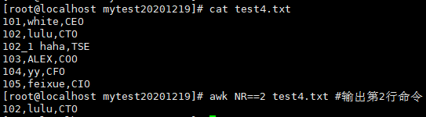
2、awk NR==2,NR==5 test4.txt #输出第2-5行命令
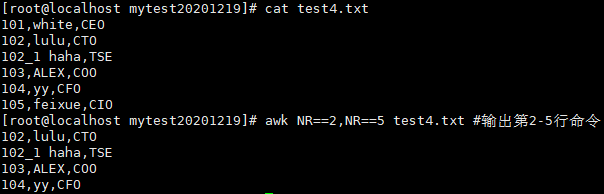
3、awk ‘{print NR,$0}’ test4.txt #awk’墙 显示 行号和这一行的内容 墙’
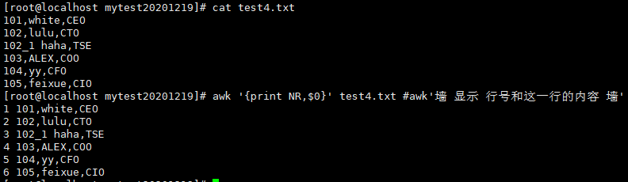
4、awk ‘NR==2,NR==5 {print NR,$0}’ test4.txt #显示第2行到第6行，并且打印行号
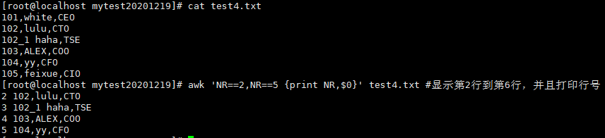
5、awk -F ‘,’ ‘{print $1,$3}’ test4.txt #打印逗号分割的第1列和第3列，$0代表整行
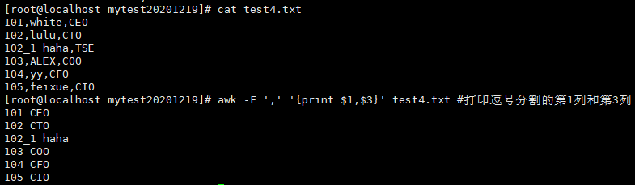
6、awk ‘{gsub(‘10’,’100’,$0);print $0}’ test4.txt #使用gsub替换10为100
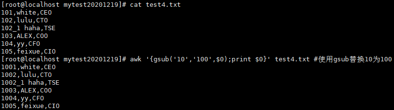
7、ifconfig ens33 | awk -F ‘inet | netmask ‘ ‘NR==2{print $2}’ #两把菜刀分割inet与netmask取得$2第二部分内容,并取第二行的分割结果
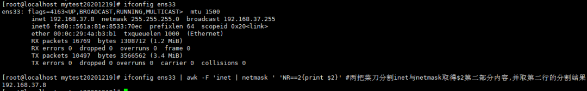
8、ifconfig ens33 | awk -F ‘[ ]+’ ‘NR==2{print $3}’ #正则表达式[ ]+表示以单个或多个空格分割，完了取第三部分内容
’ fill=’%23FFFFFF’%3E%3Crect x=’249’ y=’126’ width=’1’ height=’1’%3E%3C/rect%3E%3C/g%3E%3C/g%3E%3C/svg%3E)
9、awk -F ‘/‘ ‘{print $3}’ test5.txt #以/分割并取出第三部分内容
’ fill=’%23FFFFFF’%3E%3Crect x=’249’ y=’126’ width=’1’ height=’1’%3E%3C/rect%3E%3C/g%3E%3C/g%3E%3C/svg%3E)
10、awk -F ‘/‘ ‘{print $3}’ test5.txt|sort #以/分割并取出第三部分内容，并排序，结合sort
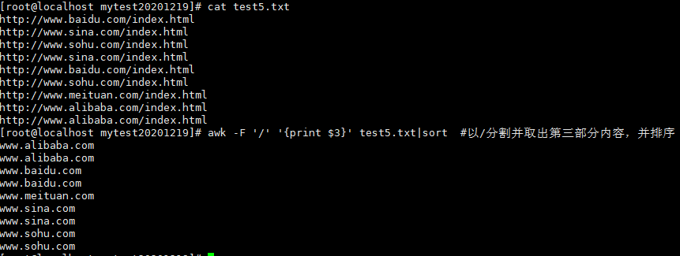
11、awk -F ‘/‘ ‘{print $3}’ test5.txt|sort|uniq -c #去重计数，结合uniq
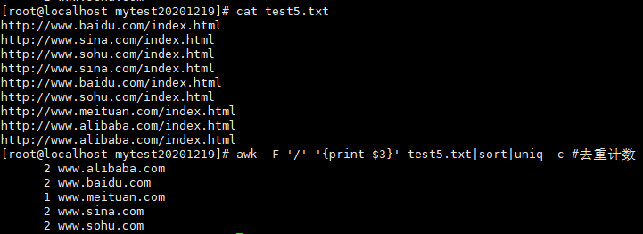
12、awk -F ‘/‘ ‘{hotel[$3]++}END{for(domain in hotel)print domain,hotel[domain]}’ test5.txt #通过awk创建数组并通过循环来实现去重统计
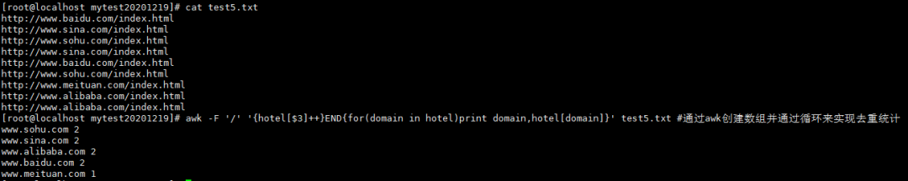
本博客所有文章除特别声明外，均采用 CC BY-SA 4.0 协议 ，转载请注明出处！